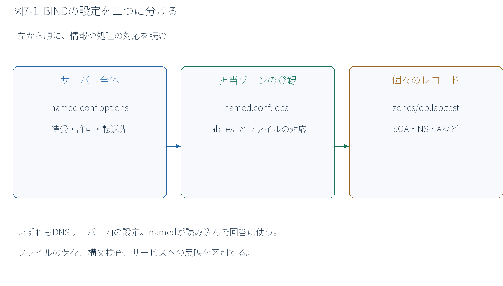
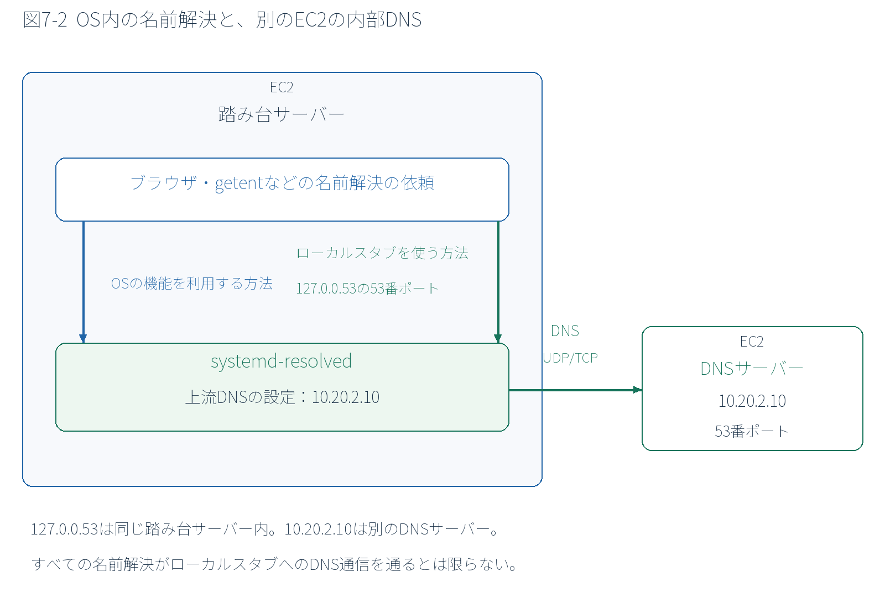
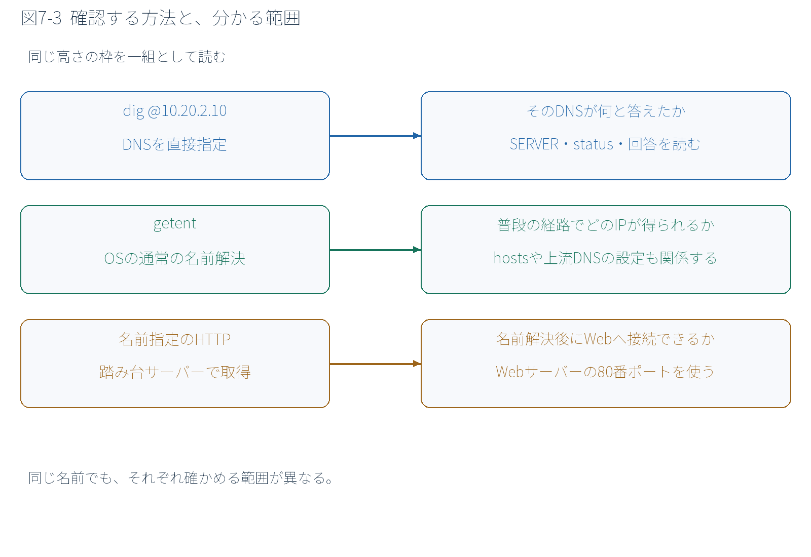

第7章 内部DNSの設定と動作確認
この章で分かること
名前から接続先のIPアドレスを調べるには、情報を答えるDNSサーバーと、そのDNSを使う側の両方を準備する必要がある。学校の備品管理システムでは、DNSサーバーに内部名を登録し、踏み台サーバーとWebサーバーから利用する。
本章では、BINDの設定が何を決めるかを整理し、DNSへ直接尋ねる確認から、Ubuntu OSが普段使う名前解決、名前を使ったWeb閲覧へ進む。それぞれをどのサーバーで行うかに注目しよう。
7.1 BINDの設定を三つのまとまりで読む
DNSサーバー上では、BIND 9がDNSの処理を行う。実行するプログラムの名前はnamedであり、今回のUbuntu OSではnamedサービスとして管理する。BINDはソフトウェアの名前、namedは実際に動くプログラムやサービスの名前として結び付けて理解する。
設定には、サーバー全体の方針、担当するゾーンの登録、そのゾーンのレコードという三つのまとまりがある。今回のUbuntu OSでは、中心となる/etc/bind/named.confから、それぞれの設定ファイルを読み込む。
| ファイル | 決める内容 |
|---|---|
| /etc/bind/named.conf.options | 接続を待ち受けるIP、問い合わせを許す相手、外部名の転送先など |
| /etc/bind/named.conf.local | lab.testというゾーンを担当することと、ゾーンファイルの保存先 |
| /etc/bind/zones/db.lab.test | ゾーンの管理情報と、名前に対応するIPアドレスなどのレコード |

図7-1 設定ファイルの役割。 枠は設定内容のまとまりを示す。すべてDNSサーバー内の設定であり、ファイルごとに別のサーバーが必要になるわけではない。
設定ファイルを保存した後は、検査してからサービスへ反映する。保存した文章と、namedが現在使っている設定を区別することは、Nginxと同じである。BINDの設定とゾーン
7.2 ゾーンの登録とレコードを結び付ける
例えば、lab.testゾーンのレコードを/etc/bind/zones/db.lab.testに保存する場合、namedにその関係を知らせる。
設定の説明例：DNSサーバーのnamed.conf.local内に書くゾーンの登録。
zone "lab.test" {
type primary;
file "/etc/bind/zones/db.lab.test";
allow-transfer { none; };
allow-update { none; };
};zoneは担当する名前の範囲、type primaryは元となるゾーン情報を管理すること、fileはレコードを保存したファイルを指定する。allow-transferはゾーン情報の一括転送、allow-updateはDNSの通信による動的な更新を許す相手を指定する。ここでは、どちらも許可しない。
ゾーンファイルには、第6章で説明したSOA、NS、Aなどを記録する。例えばguide IN A 10.20.1.20という行は、基準がlab.test.であればguide.lab.test.をWebサーバーの内部IPへ対応させる。名前のつづり、ゾーンの基準、返すIPをそれぞれ読む。設定の構文が正しくても、別のIPを書けば、その別のIPが回答になる。
SOAのserialは、ゾーンの変更に合わせて増やす。ファイル名をdb.lab.testにしただけではゾーン登録にはならず、ゾーン登録だけがあってもレコードの内容が正しいとは限らない。
7.3 問い合わせを許す相手と、転送先を決める
許可する送信元をまとめる
ACL（Access Control List）は、許可する相手などをまとめるリストである。今回のBINDでは、DNSサーバー自身、踏み台サーバー、Webサーバーからの問い合わせを扱う。
設定の説明例：問い合わせ元のリストと、それを使う設定項目。
acl "internal_clients" {
127.0.0.1;
10.20.1.10;
10.20.1.20;
};このリストは、後の設定で相手の範囲を指定するときに使う。ACLを定義するだけで、すべての処理へ自動的に適用されるわけではない。
| 設定項目 | 制御すること |
|---|---|
| listen-on | DNSサーバー自身の、どのIPv4アドレスで接続を受け付けるか |
| allow-query | DNSへの問い合わせを許す相手 |
| allow-recursion | 外部名などの名前解決を取りまとめる処理を許す相手 |
| allow-query-cache | 保存しているキャッシュの情報を回答する相手 |
例えば、allow-query { internal_clients; };は、先ほどのACLに含まれる相手へ問い合わせを許す指定である。問い合わせを受けること、外部名を調べること、キャッシュを利用させることには、別々の設定がある。BINDのアクセス制御
外部名の解決と、ゾーン転送を区別する
forwardersには外部名を調べる際の依頼先として10.20.0.2を指定し、forward onlyでその転送先を使う。これに対し、AXFRはゾーンの情報をまとめて取得するための問い合わせである。通常のAレコードの問い合わせとは目的が異なり、今回の構成では転送を許可しない。
SG（AWSのSecurity Group）は、DNSサーバーの53番ポートまで通信を届けてよいかを制御する。BINDのACLは、届いた問い合わせをどう扱うかを制御する。SGとBINDは異なる場所で働くため、片方の設定だけで両方を説明することはできない。
7.4 問い合わせる側を切り替える前に、DNS側を確かめる
踏み台サーバーとWebサーバーが普段使うDNSを変更する前に、DNSサーバーが自分の情報を正しく読める状態にする。名前解決の問い合わせ先を先に変更すると、設定途中のDNSに依存することになる。
実行場所：DNSサーバーの管理用端末。構文検査に使う例。
sudo named-checkconf -z
sudo named-checkzone lab.test /etc/bind/zones/db.lab.testnamed-checkconfはBINDの設定を検査し、-zではprimaryゾーンの読み込みも検査する。named-checkzoneは、指定したゾーン名とゾーンファイルを組み合わせて検査する。エラーがあれば、表示されたファイルや行を直してから再検査する。BINDの検査コマンド
検査後に設定をサービスへ反映し、サービスの状態と、UDP・TCPそれぞれの53番ポートの待受を読む。DNSサーバー自身からのdig @127.0.0.1 guide.lab.test Aは、このDNSサーバー内で回答を得る確認となる。構文検査、サービスの起動、実際の回答は、それぞれ別の状態を確かめている。
7.5 問い合わせ先を指定して、内部の回答を確かめる
DNSサーバー自身から回答できたら、次は別のサーバーから尋ねる。踏み台サーバーやWebサーバーの端末で、問い合わせ先を明示する。
実行場所：踏み台サーバーの端末。登録済みの説明用の名前を問い合わせる例。
dig @10.20.2.10 guide.lab.test A
dig @10.20.2.10 guide.lab.test A +tcp1行目は通常UDP、2行目の+tcpはTCPでDNSサーバーの53番ポートへ問い合わせるオプションである。UDPで回答できてもTCPでも回答できるとは限らないため、通信方式を区別する。
表示例：回答の中心となる部分の抜粋。
status: NOERROR
flags: qr aa rd ra
guide.lab.test. 300 IN A 10.20.1.20
SERVER: 10.20.2.10#53SERVERは実際の問い合わせ先、NOERRORは処理結果、aaは担当するゾーンの権威情報による回答を示す。Aレコードの右側が接続先のIPv4アドレス、300はTTLである。名前が正しくても、別のDNSからの回答を見ていないかも合わせて読む。
未登録名のNXDOMAIN、方針によるREFUSED、時間内に回答を受け取れないタイムアウトも区別する。AXFRの拒否を確かめる場合も、同じ相手から通常の問い合わせが成功することと、転送が明示的に拒否されることを対にして読む。タイムアウトだけでは、転送を拒否したのか、そもそも通信できないのかを区別できない。
7.6 Ubuntu OSが普段使うDNSを設定する
DNSサーバーを指定したdigと、普段の名前解決
dig @10.20.2.10 ...は、そのコマンドだけで問い合わせ先を指定している。これに成功しても、ブラウザやアプリが普段使う問い合わせ先が同じであるとは限らない。
今回のUbuntu OSでは、ネットワーク設定をNetplanで管理し、systemd-resolvedが名前解決を支える。踏み台サーバーとWebサーバーの設定で、利用する上流DNSを内部DNSの10.20.2.10へ向ける。
設定の説明例：既存のネットワークインターフェース設定の一部分。
dhcp4: true
dhcp4-overrides:
use-dns: false
nameservers:
addresses: [10.20.2.10]dhcp4: trueはIPアドレスなどをDHCPで受け取る設定を保ち、use-dns: falseはDHCPで配られるDNSを採用しない指定である。nameserversには普段使う問い合わせ先を書く。このアドレスは踏み台サーバー自身のIPではない。実際のファイルでは既存のインターフェース名や他の設定も保持する。NetplanのDNS設定
127.0.0.53と内部DNSを混同しない
Ubuntu OSの/etc/resolv.confに127.0.0.53が表示される場合がある。これは同じコンピューター内のsystemd-resolvedが提供するローカルスタブのアドレスであり、別のEC2の内部DNSを表しているわけではない。

図7-2 OS内の名前解決と、その先のDNS。 アプリはOSの名前解決機能を使う。ローカルスタブへDNS通信する方法もあり、その場合は同じサーバー内の127.0.0.53へ送る。どちらの方法でも、上流として選ばれた内部DNSへ必要な問い合わせを送る。すべてのアプリが必ずスタブを通ると決める図ではない。
resolvectl dnsでは上流DNSの設定を読み、getent ahostsv4 guide.lab.testではUbuntu OSの通常の名前解決を使ってIPv4アドレスを調べる。Netplanファイル、動作中のDNS設定、実際の名前解決の結果を対応させよう。systemd-resolvedの仕組み
7.7 名前を使って、既存のWebへ接続する
最後に、踏み台サーバーのブラウザでIP指定と名前指定のURLを開く。例えば、同じファイルに対するhttp://10.20.1.20/example.txtとhttp://guide.lab.test/example.txtを比較する。名前指定では、先に名前解決を行い、その結果を使って同じWebサーバーへ接続する。

図7-3 確認ごとに分かることを積み重ねる。 問い合わせ先を指定したdig、通常経路を使うgetent、名前を使ったHTTP取得は、確かめる範囲が異なる。
/etc/hostsに名前とIPを直接書くと、そのファイルの情報で名前が使えることもある。しかし、それでは今回の内部DNSから情報を得た説明にはならない。ブラウザが独自のDNSを使う設定も、Ubuntu OSの設定とは区別する。今回の踏み台サーバーのブラウザでは、提供された内部DNSを使う設定を維持する。
後にWebサーバーのアプリがDBへ接続するときも、Webサーバー自身がDBサーバーの名前を解決する。踏み台サーバーで成功した結果だけで済ませず、名前を使うサーバーごとに設定と結果を結び付ける。
練習・課題2では、内部DNSへ名前を登録し、踏み台サーバーとWebサーバーの通常の名前解決から利用する構成を作る。普段のインターネット接続のスマートフォンへ、今回の内部名を公開する構成ではない。
章末問題
問1
ゾーンの登録とゾーンファイルは、それぞれ何を指定するものか。
問2
dig @10.20.2.10 guide.lab.test Aが成功すれば、踏み台サーバーのブラウザも同じDNSを使うと言えるか。
問3
127.0.0.53と10.20.2.10は、今回それぞれどこを表すか。
問4
AXFRがタイムアウトしたことだけで、BINDがゾーン転送を明示的に拒否したと判断できるか。
章末解答
問1
ゾーンの登録は担当する名前の範囲、管理方式、レコードを保存したファイルの場所などを指定する。ゾーンファイルは、その範囲の管理情報や個々のレコードを記録する。
問2
言えない。そのdigだけで問い合わせ先を指定している。通常の上流DNS設定をresolvectlで読み、getentや名前指定HTTPの結果を合わせて確認する。
問3
127.0.0.53は、問い合わせる側の同じサーバー内にあるsystemd-resolvedのローカルスタブを表す。10.20.2.10は、別のEC2で動く今回の内部DNSサーバーである。
問4
判断できない。通信不能も考えられるため、通常問い合わせの成功と、AXFRに対する明示的な拒否を合わせて読む。
参考資料
確認日：2026-11-03。設定・出力は説明例である。
・ 第6章
・ 練習P2